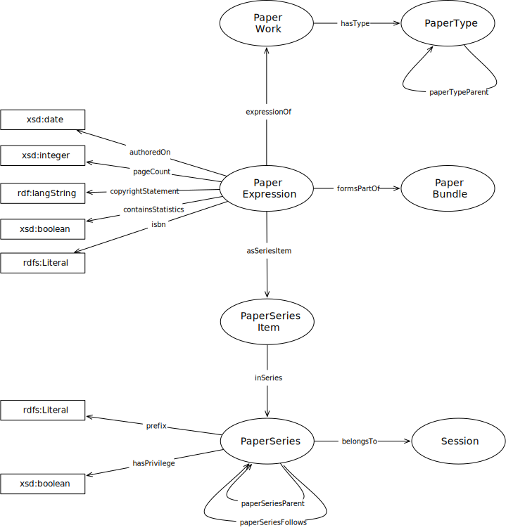

IRI: http://parliament.uk/ontologies/paper/Author
IRI: http://parliament.uk/ontologies/paper/PaperBundle
IRI: http://parliament.uk/ontologies/paper/PaperExpression
IRI: http://parliament.uk/ontologies/paper/PaperSeries
IRI: http://parliament.uk/ontologies/paper/PaperSeriesMembership
IRI: http://parliament.uk/ontologies/paper/PaperType
IRI: http://parliament.uk/ontologies/paper/PaperWork
IRI: http://parliament.uk/ontologies/paper/Session
IRI: http://parliament.uk/ontologies/paper/author
IRI: http://parliament.uk/ontologies/paper/belongsTo
IRI: http://parliament.uk/ontologies/paper/expressionOf
IRI: http://parliament.uk/ontologies/paper/formsPartOf
IRI: http://parliament.uk/ontologies/paper/hasPersonalAuthor
IRI: http://parliament.uk/ontologies/paper/hasType
IRI: http://parliament.uk/ontologies/paper/membershipInSeries
IRI: http://parliament.uk/ontologies/paper/membershipOfPaperExpression
IRI: http://parliament.uk/ontologies/paper/paperSeriesFollows
IRI: http://parliament.uk/ontologies/paper/paperSeriesParent
IRI: http://parliament.uk/ontologies/paper/paperTypeParent
IRI: http://parliament.uk/ontologies/paper/containsStatistics
IRI: http://parliament.uk/ontologies/paper/copyrightStatement
IRI: http://parliament.uk/ontologies/paper/hasPrivilege
IRI: http://parliament.uk/ontologies/paper/isbn
IRI: http://parliament.uk/ontologies/paper/originatedOn
IRI: http://parliament.uk/ontologies/paper/pageCount
IRI: http://parliament.uk/ontologies/paper/prefix
This HTML document was obtained by processing the OWL ontology source code through LODE, Live OWL Documentation Environment, developed by Silvio Peroni.